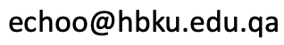

Euijin Alley Choo

-
PostDoctoral Researcher
Cyber Security Group
Qatar Computing Research Institute,
HBKU Research Complex,Education City, Doha, Qatar -
Lab: Cyber Security Group
-
Office: A147 (RC-B1-1188)
-
Email:

Short Bio
-
Dr. Euijin (Alley) Choo is a Postdoctoral Researcher at Qatar Computing Research Institute. Prior to joining QCRI, she worked as a research professor at Korea University and a visiting assistant professor at University of Missouri, Rolla. She received her Ph.D from North Carolina State University under the supervision of Dr. Min Chi and Dr. Ting Yu in 2015. She also received her dual BS in Computer Science and Mathematics, and MS in Computer Science, at Korea University. Her research interest sits at the intersection of security and data analysis involving data mining, machine learning, and deep learning. More specifically, it includes security and information assurance in e-commerce, and anomaly detection in network traffic and enterprise logs. During her research, she received Provost Fellowship from NC state University and Brain Korea 21 Scholarship from Korea Research Foundation. she was also an awardee of a few travel grants to attend major security conferences including CCS and IEEE S&P. She is truly honored to be a recipient of the best paper award at DBSEC 2015.
Research Area
-
Current Research
Spam Detection in Public Forums Details
Information Assurance in Electronic Commerce MarketMalware Detection
- Past Research
[show]
Resilience Evaluation of Reputation Systems
VM-based Automated Unpacking of MalwaresSecure Real-time Media Transmission Maintaining High Media QoS performance
Protect QoS of Multimedia Streaming against DoS attack
Publications
-
Journal
Guhyeon Jeong, Euijin Choo, Joosuk Lee, Heejo Lee,"Generic Unpacking using Entropy Analysis",Journal of Korean Institute of. Information Technology, Vol. 7, No. 1, pp. 232-238, Feb. 2009.
-
Conference/Workshop
Euijin Choo, Ting Yu, Min Chi,"Detecting Opinion Spammer Groups through Community Discovery and Sentiment Anal-ysis" , Data and Applications Security and Privacy (IFIP DBSec) XXIX. LNCS, Springer, 2015. 170-187. (Best Paper Award)
Euijin Choo, Ting Yu, Min Chi, Yan Sun,"Revealing and Incorporating Implicit Communities to Improve Recommender Systems" , 15th ACM Conference on Economics and Computation (ACM EC 2014), June. 2014.
Euijin Choo, Ting Yu, Min Chi,"Toward Understanding Spamming Behavior in Public Forums" , 35th IEEE Symposium on Security and Privacy (IEEE S&P 2014), Poster Presentation, May. 2014.
Euijin Choo, Younghee Park, Huzefa Siyamwalay,"Identifying Malicious Metering Data in Advanced Metering Infrastructure" , 8th IEEE International Symposium on Service Oriented System Engineering (IEEE SOSE 2014), April. 2014, pp. 490-495
Euijin Choo, Jianchun Jiang, Ting Yu,"COMPARS: Toward an Empirical Approach for Comparing the Resilience of Reputation Systems" , 4th ACM conference on Data and application security and privacy (ACM CODASPY 2014), pp. 87-98, Mar. 2014.
Guhyeon Jeong, Euijin Choo, Joosuk Lee, Munkhbayar Bat-Erdene, Heejo Lee,"Generic Unpacking using Entropy Analysis" , 5th International Conference on Malicious and Unwanted Software (IEEE MALWARE), pp. 114-121, Oct. 20. 2010.
Euijin Choo, Heejo Lee, Wan Yeon Lee,"Dynamic Multimedia Scheduling against Motion Based DoS attacks",International Conference on Information Networking (ICOIN 2009), Jan. 2009
Guhyeon Jeong, Euijin Choo, Joosuk Lee, Heejo Lee,"Unpacking Malwares" , The 30th Korea Information Processing Society Fall Conference (KIPS), Nov. 2008
Euijin Choo, Jehyun Lee, Heejo Lee, Giwon Nam,"SRMT: A Lightweight Encryption Scheme for Secure Real-time Multimedia Transmission", Multimedia and Ubiquitous Engineering (MUE 2007), Apr. 2007.
-
Patent
Euijin Choo, Heejo Lee,"Method of Scheduling Packet" , Domestic, Registration, 10-0991526, Oct. 2. 2010
Euijin Choo, Jehyun Lee, Heejo Lee, Giwon Nam,"Method for Encrypting and Decrypting an Image Frame", Domestic, Registration, 10-0848642-0000, July. 21. 2008
Euijin Choo, Jehyun Lee, Heejo Lee, Giwon Nam,"Method for Encrypting and Decrypting an Image Frame", International, Application, 11/905,240, Sep. 28. 2007
Talks & Demo
Euijin Choo,"Fake Reviewers: Which Items are Their Attractive Targets? " , Science of Security Lablet Fall 2013 Community Forum with Industry, Oct. 2013, Raleigh, USA.
Euijin Choo,"Dynamic Multimedia Scheduling against Motion based DoS attack" , 1st Workshop among Asian Information Security Researchers(WAIS2008), Invited Talk, July. 2008, Dalian, China.
Euijin Choo,"Secure Real-time Multimedia Transmission" , Brain Korea 21 Annual Exhibition, System Demo and Poster Presentation (Best Research Lab Award), 2007, Seoul, Korea.
Euijin Choo,"Secure Real-time Media Transmission" , 3rd Joint Workshop between Security Researchers in Korea and Japan, Invited Talk, July. 2006, Seoul, Korea.
Professional Activities
-
IEEE Student Member
-
Secondary Reviewer of Journal of Educational Technology & Society, 2015
-
Reviewer of IEICE Transactions on Information and Systems, 2015
-
Secondary Reviewer of 9th ACM Symposium on Information, Computer, and Communications Security (ASIACCS),2015
-
Secondary Reviewer of 21st ACM Conference on Computer and Communications Security (CCS),2014
-
Secondary Reviewer of 18th European Symposium on Research in Computer Security, Egham, UK, Sep 9-13, 2013
-
Secondary Reviewer of ACM SIGMOD, 2013
-
Reviewer of Security and Communication Networks, 2013
-
Secondary Reviewer of Workshop on Privacy in the Electronic Society (WPES), 2011
-
Secondary Reviewer of 3rd IEEE Conference on Privacy, Security, Risk, and Trust (PASSAT),2011
-
Secondary Reviewer of 15th ACM Symposium on Access Control Models and Technologies (SACMAT), 2010
-
Secondary Reviewer of IEEE Internet Computing (ICSI),2009,ICSI-2009-12-0186
-
Reviewer of International Conference on Advanced Concepts for Intelligent Vision Systems Sep, 2009
Academic Experience
-
North Carolina State University
Research Assistant, Fall 2009 - Present, PATIOS LAB
Teaching Assistant, Fall 2009 - Spring 2011, Math & Security Courses [details]CSC 574 (Computer and Network Security, Dr. Harfoush), Fall 2010, Spring 2011
CSC 405 (Introduction to Computer Security, Dr. Jiang), Spring 2010
CSC 226 (Discrete Mathematics, Dr. Rodman), Fall 2009
Korea University
Research Staff, Spring 2008 - Spring 2009, CCS LAB
Research Assistant, Spring 2006 - Fall 2008, CCS LAB
Teaching Assistant, Spring 2006, Information Security (Dr.Heejo Lee)
Honor & Awards
-
IEEE Symposium on Security and Privacy Travel Award, May 2014
Sponsored by IEEE S&P
-
UIUC Security Summer School Scholarship, July 2013
Sponsored by Information Trust Institute at University of Illinois at Urbana-Champaign
-
Computer and Communication Security Conference Travel Award, Oct 2010
Sponsored by ACM CCS
-
Trusted Infrastructure Workshop Travel Award, May 2010
Sponsored by Carnegie Mellon University
-
Provost Fellowship, Fall 2009 - Spring 2010
Sponsored by North Carolina State University
-
Best Research Lab Award, Brain Korea 21 Annual Exhibition, Spring 2007
Sponsored by Korea Research Foundation
-
Brain Korea 21 Scholarship, Spring 2006 - Winter 2009
Sponsored by Korea Research Foundation
-
Samsung Networks Academy Scholarship, Summer 2003
Sponsored by Samsung Networks